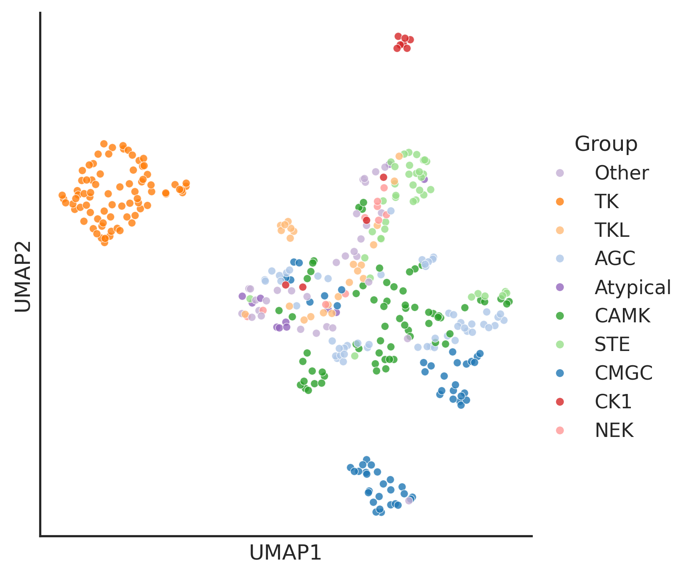
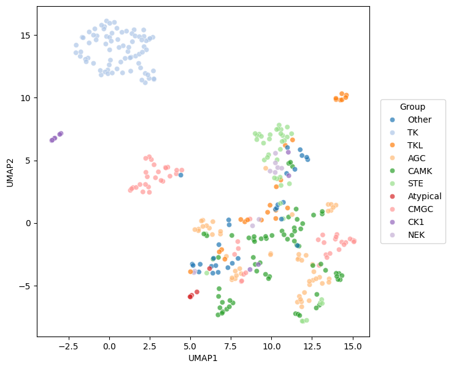
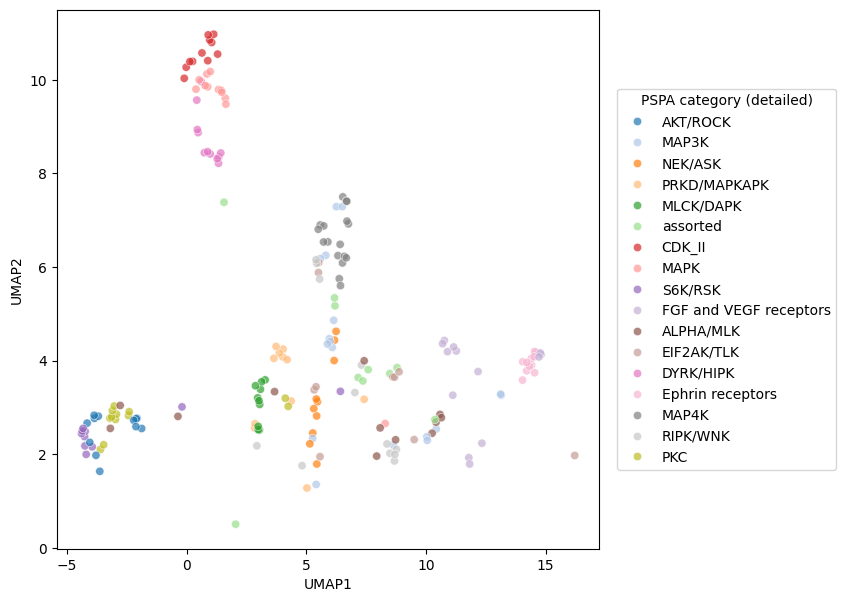
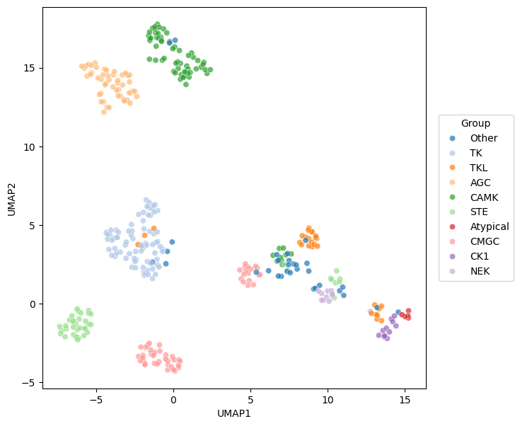
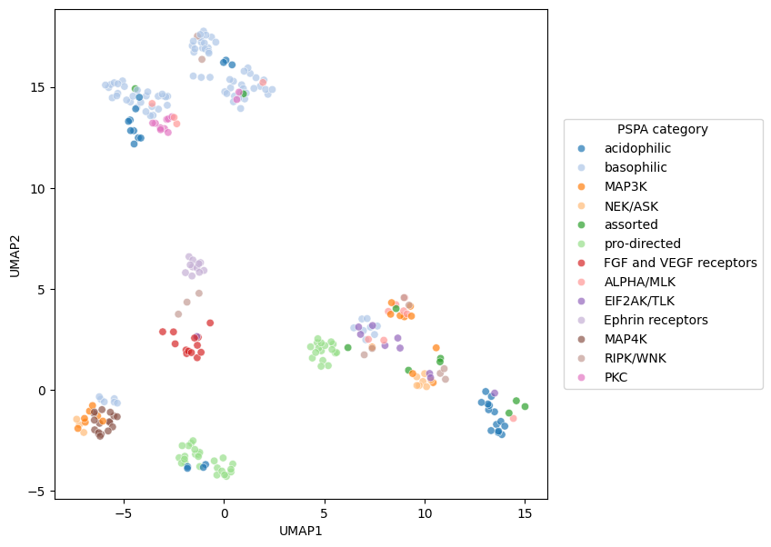
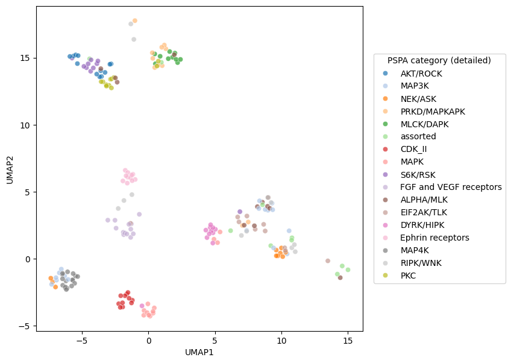
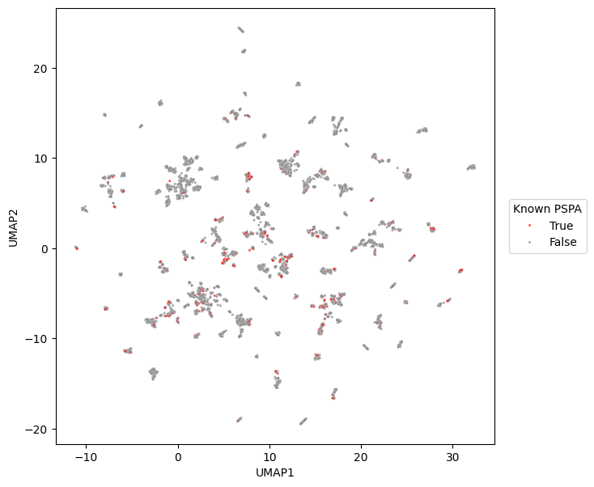

import pandas as pd
from katlas.core import *
from katlas.plot import *
from katlas.feature import *UMAP of PSPA & KD seq
kinase info + PSPA data
df = Data.get_kinase_info()We only kept those kinase domain with active D1 (1525 in HRD motif) and D2 (1724 in DFG motif) –>active_kd_ID and in PSPA
# df[df.kd_ID.notna()&df.active_kd_ID.isna()].to_csv('test.csv')# df=df[df.active_kd_ID.notna()]pspa_info = df[df.in_pspa.astype(bool)]cols = ['kinase','uniprot','modi_group','pspa_category_big','pspa_category_small','family','subfamily','kd_ID']pspa_info = pspa_info[cols]The step above when merge, automatically filter out those with _TYR ( they are very non-specific, we’ll remove them)
Umap plot of PSPA PSSM
pspa=Data.get_pspa_all_scale().reset_index()# add kinase info
info= pspa_info.merge(pspa)feat = info.iloc[:,-230:]reduce_feature<function katlas.plot.reduce_feature(df: pandas.core.frame.DataFrame, method: str = 'pca', complexity: int = 20, n: int = 2, load: str = None, save: str = None, seed: int = 123, **kwargs)>embed = reduce_feature(feat,method='umap',
complexity=7,
min_dist=0.6,
)/home/sky1ove/git/KATLAS/katlas/.venv/lib/python3.12/site-packages/logomaker/../umap/umap_.py:1952: UserWarning: n_jobs value 1 overridden to 1 by setting random_state. Use no seed for parallelism.
warn([k for k in group_color.keys() if k in info.modi_group.tolist()]['CMGC', 'AGC', 'TK', 'TKL', 'CAMK', 'STE', 'CK1', 'NEK', 'Atypical', 'Other']import seaborn as sns
from matplotlib import pyplot as pltset_sns()plot_2d(embed,hue=info.modi_group,s=20,
palette=group_color,legend=True,legend_title='Group')
Func that wrap all
def plot_group_pspa_category(info_df, # info df that contain key column for merge with feat_df
feat_df, # firt column is key column
n_neighbors,
min_dist,
):
merged= info_df.merge(feat_df)
# Get UMAP embedding
feat_col = feat_df.columns[1:]
print('feature columns:', len(feat_col))
feat = merged[feat_col]
print('row numbers:', len(feat))
embed = reduce_feature(feat,'umap',n_neighbors,min_dist=min_dist)
# Colored by group
plot_2d(embed,hue=merged.modi_group,hue_title='Group',palette='tab20')
# Colored by pspa category
hue_pspa = get_hue_big(merged,'pspa_category_big',10)
plot_2d(embed,hue=hue_pspa,hue_title='PSPA category',palette='tab20')
# Colored by pspa category in details
hue_pspa = get_hue_big(merged,'pspa_category_small',10)
plot_2d(embed,hue=hue_pspa,hue_title='PSPA category (detailed)',palette='tab20')plot_group_pspa_category(pspa_info,pspa,n_neighbors=5,min_dist=0.6)feature columns: 230/home/zeus/miniconda3/envs/cloudspace/lib/python3.10/site-packages/logomaker/../sklearn/utils/deprecation.py:151: FutureWarning: 'force_all_finite' was renamed to 'ensure_all_finite' in 1.6 and will be removed in 1.8.
warnings.warn(
/home/zeus/miniconda3/envs/cloudspace/lib/python3.10/site-packages/logomaker/../umap/umap_.py:1952: UserWarning: n_jobs value 1 overridden to 1 by setting random_state. Use no seed for parallelism.
warn(


Umap plot of T5 on uniprot kd
t5 = pd.read_parquet('out/uniprot_kd_t5.parquet').reset_index()t5.head()| kd_ID | T5_0 | T5_1 | T5_2 | T5_3 | T5_4 | T5_5 | T5_6 | T5_7 | T5_8 | ... | T5_1014 | T5_1015 | T5_1016 | T5_1017 | T5_1018 | T5_1019 | T5_1020 | T5_1021 | T5_1022 | T5_1023 | |
|---|---|---|---|---|---|---|---|---|---|---|---|---|---|---|---|---|---|---|---|---|---|
| 0 | A0A075F7E9_LERK1_ORYSI_KD1 | 0.014122 | 0.068848 | 0.016098 | -0.001535 | -0.001333 | 0.021378 | 0.030289 | -0.062408 | 0.028442 | ... | -0.029327 | 0.014893 | -0.006218 | -0.069824 | 0.044067 | -0.009636 | -0.007458 | 0.021240 | 0.005234 | -0.034637 |
| 1 | A0A078BQP2_GCY25_CAEEL_KD1 | -0.001307 | -0.030319 | 0.020981 | 0.026642 | -0.012787 | 0.034088 | -0.028961 | -0.105713 | -0.018692 | ... | -0.038696 | -0.036804 | -0.016571 | -0.072998 | 0.060852 | 0.044586 | 0.002766 | -0.014633 | 0.046051 | 0.004398 |
| 2 | A0A078CGE6_M3KE1_BRANA_KD1 | 0.054504 | 0.093750 | -0.007454 | 0.018860 | -0.042267 | -0.005390 | -0.004925 | -0.046814 | -0.013489 | ... | -0.016037 | 0.000752 | -0.038391 | -0.041382 | 0.069580 | -0.022369 | -0.026276 | -0.001382 | 0.006645 | -0.034485 |
| 3 | A0A0G2K344_PK3CA_RAT_KD1 | 0.030807 | 0.127075 | 0.007271 | -0.018631 | 0.007950 | 0.019165 | -0.024902 | -0.068176 | -0.020386 | ... | -0.018188 | -0.014389 | -0.023575 | 0.006779 | 0.052277 | -0.052155 | -0.023071 | 0.034332 | 0.002714 | -0.007095 |
| 4 | A0A0H2ZM62_HK06_STRP2_KD1 | 0.020813 | -0.063660 | -0.013458 | 0.045715 | -0.035828 | 0.039062 | 0.024445 | -0.089233 | 0.005287 | ... | -0.054688 | 0.024170 | 0.007973 | -0.101318 | 0.066223 | 0.005753 | -0.048492 | 0.015091 | 0.024933 | 0.019699 |
5 rows × 1025 columns
plot_group_pspa_category(pspa_info,t5,n_neighbors=10,min_dist=0.3)feature columns: 1024/home/zeus/miniconda3/envs/cloudspace/lib/python3.10/site-packages/logomaker/../sklearn/utils/deprecation.py:151: FutureWarning: 'force_all_finite' was renamed to 'ensure_all_finite' in 1.6 and will be removed in 1.8.
warnings.warn(
/home/zeus/miniconda3/envs/cloudspace/lib/python3.10/site-packages/logomaker/../umap/umap_.py:1952: UserWarning: n_jobs value 1 overridden to 1 by setting random_state. Use no seed for parallelism.
warn(


Umap plot of T5 on Kinasecome sequence
info = Data.get_kinase_info()info.columnsIndex(['kinase', 'ID_coral', 'uniprot', 'ID_HGNC', 'modi_group', 'group',
'family', 'subfamily_coral', 'subfamily', 'in_pspa_st', 'in_pspa_tyr',
'in_pspa', 'in_cddm', 'kd_ID', 'active_D1_D2', 'active_kd_ID',
'pspa_ID', 'pseudo', 'pspa_category_small', 'pspa_category_big',
'cddm_big', 'cddm_small', 'length', 'human_uniprot_sequence',
'kinasecom_domain', 'nucleus', 'cytosol', 'cytoskeleton',
'plasma membrane', 'mitochondrion', 'Golgi apparatus',
'endoplasmic reticulum', 'vesicle', 'centrosome', 'aggresome',
'main_location'],
dtype='object')kd_seq = info[['kd_ID','kinasecom_domain']]pspa_info_seq = pspa_info[cols].merge(kd_seq)from katlas.feature import *kinasecom = get_t5(pspa_info_seq,'kinasecom_domain')You are using the default legacy behaviour of the <class 'transformers.models.t5.tokenization_t5.T5Tokenizer'>. This is expected, and simply means that the `legacy` (previous) behavior will be used so nothing changes for you. If you want to use the new behaviour, set `legacy=False`. This should only be set if you understand what it means, and thoroughly read the reason why this was added as explained in https://github.com/huggingface/transformers/pull/24565embed = reduce_feature(kinasecom,'umap',5,min_dist=0.6)
plot_2d(embed,hue=pspa_info_seq.modi_group,hue_title='Group',palette='tab20')/home/zeus/miniconda3/envs/cloudspace/lib/python3.10/site-packages/logomaker/../sklearn/utils/deprecation.py:151: FutureWarning: 'force_all_finite' was renamed to 'ensure_all_finite' in 1.6 and will be removed in 1.8.
warnings.warn(
/home/zeus/miniconda3/envs/cloudspace/lib/python3.10/site-packages/logomaker/../umap/umap_.py:1952: UserWarning: n_jobs value 1 overridden to 1 by setting random_state. Use no seed for parallelism.
warn(
Onehot encode
align = pd.read_parquet('out/uniprot_kd_align.parquet')align.shape(5536, 3434)active=(align[1525]=='D')& (align[1724]=='D')active.value_counts()True 4209
False 1327
Name: count, dtype: int64align = align[active]# check 'pseudo alignment' nbs to know how to get freq_max
freq_max = pd.read_csv('out/align_freq_max_aa.csv')freq_max| position | aa | max_value | |
|---|---|---|---|
| 0 | 1549 | N | 0.815390 |
| 1 | 2618 | D | 0.809429 |
| 2 | 1724 | D | 0.800759 |
| 3 | 1525 | D | 0.791004 |
| 4 | 1730 | G | 0.775470 |
| ... | ... | ... | ... |
| 214 | 193 | E | 0.101879 |
| 215 | 640 | G | 0.101879 |
| 216 | 922 | L | 0.101337 |
| 217 | 603 | R | 0.101156 |
| 218 | 2581 | G | 0.100614 |
219 rows × 3 columns
onehot_col = freq_max[freq_max.max_value>0.05].position.sort_values().tolist()onehot = align[onehot_col]from sklearn.preprocessing import OneHotEncoder
def get_onehot(df):
df=df.copy()
encoded_df = pd.DataFrame(index=df.index)
encoder = OneHotEncoder(sparse_output=False, dtype=int, handle_unknown='ignore')
for col in df.columns:
reshaped = df[[col]] # keep as DataFrame
encoded = encoder.fit_transform(reshaped)
aa_labels = encoder.categories_[0]
new_col_names = [f"{col}_{aa}" for aa in aa_labels]
encoded_subdf = pd.DataFrame(encoded,index=df.index)
encoded_subdf.columns=new_col_names
encoded_df = pd.concat([encoded_df, encoded_subdf], axis=1)
return encoded_dfencoded_active=get_onehot(onehot)Umap of onehot
feat_df = encoded_active.reset_index()plot_group_pspa_category(pspa_info,feat_df,n_neighbors=15,min_dist=0.7)feature columns: 4071
row numbers: 376/home/zeus/miniconda3/envs/cloudspace/lib/python3.10/site-packages/logomaker/../sklearn/utils/deprecation.py:151: FutureWarning: 'force_all_finite' was renamed to 'ensure_all_finite' in 1.6 and will be removed in 1.8.
warnings.warn(
/home/zeus/miniconda3/envs/cloudspace/lib/python3.10/site-packages/logomaker/../umap/umap_.py:1952: UserWarning: n_jobs value 1 overridden to 1 by setting random_state. Use no seed for parallelism.
warn(


embed = reduce_feature(encoded_active,
'umap',
complexity=20,
min_dist=0.5
)/home/zeus/miniconda3/envs/cloudspace/lib/python3.10/site-packages/logomaker/../sklearn/utils/deprecation.py:151: FutureWarning: 'force_all_finite' was renamed to 'ensure_all_finite' in 1.6 and will be removed in 1.8.
warnings.warn(
/home/zeus/miniconda3/envs/cloudspace/lib/python3.10/site-packages/logomaker/../umap/umap_.py:1952: UserWarning: n_jobs value 1 overridden to 1 by setting random_state. Use no seed for parallelism.
warn(hue_is_PSPA=embed.index.isin(pspa_info.kd_ID)plot_2d(embed,
hue_title='Known PSPA',
# alpha=0.5,
hue = hue_is_PSPA,
hue_order=[True, False],
s=5,
palette={True: 'red', False: 'gray'})
PSPA kd plot
encoded_df = get_onehot(onehot_pspa)encoded_df| 65_- | 65_A | 65_C | 65_E | 65_F | 65_I | 65_K | 65_L | 65_N | 65_Q | ... | 3192_K | 3192_L | 3192_M | 3192_Q | 3192_R | 3192_S | 3192_T | 3192_V | 3192_W | 3192_Y | |
|---|---|---|---|---|---|---|---|---|---|---|---|---|---|---|---|---|---|---|---|---|---|
| kd_ID | |||||||||||||||||||||
| Q2M2I8_AAK1_HUMAN_KD1 | 0 | 0 | 0 | 0 | 0 | 0 | 0 | 0 | 0 | 0 | ... | 0 | 0 | 0 | 0 | 0 | 0 | 0 | 0 | 0 | 0 |
| P27037_AVR2A_HUMAN_KD1 | 1 | 0 | 0 | 0 | 0 | 0 | 0 | 0 | 0 | 0 | ... | 0 | 0 | 0 | 0 | 0 | 0 | 0 | 0 | 0 | 0 |
| Q13705_AVR2B_HUMAN_KD1 | 1 | 0 | 0 | 0 | 0 | 0 | 0 | 0 | 0 | 0 | ... | 0 | 0 | 0 | 0 | 0 | 0 | 0 | 0 | 0 | 0 |
| P31749_AKT1_HUMAN_KD1 | 1 | 0 | 0 | 0 | 0 | 0 | 0 | 0 | 0 | 0 | ... | 0 | 0 | 0 | 0 | 0 | 0 | 0 | 0 | 0 | 0 |
| P31751_AKT2_HUMAN_KD1 | 1 | 0 | 0 | 0 | 0 | 0 | 0 | 0 | 0 | 0 | ... | 0 | 0 | 0 | 0 | 0 | 0 | 0 | 0 | 0 | 0 |
| ... | ... | ... | ... | ... | ... | ... | ... | ... | ... | ... | ... | ... | ... | ... | ... | ... | ... | ... | ... | ... | ... |
| P17948_VGFR1_HUMAN_KD1 | 1 | 0 | 0 | 0 | 0 | 0 | 0 | 0 | 0 | 0 | ... | 0 | 1 | 0 | 0 | 0 | 0 | 0 | 0 | 0 | 0 |
| P35968_VGFR2_HUMAN_KD1 | 1 | 0 | 0 | 0 | 0 | 0 | 0 | 0 | 0 | 0 | ... | 0 | 0 | 0 | 0 | 0 | 0 | 0 | 0 | 0 | 0 |
| P35916_VGFR3_HUMAN_KD1 | 1 | 0 | 0 | 0 | 0 | 0 | 0 | 0 | 0 | 0 | ... | 0 | 1 | 0 | 0 | 0 | 0 | 0 | 0 | 0 | 0 |
| P07947_YES_HUMAN_KD1 | 1 | 0 | 0 | 0 | 0 | 0 | 0 | 0 | 0 | 0 | ... | 0 | 0 | 0 | 0 | 0 | 0 | 0 | 0 | 0 | 0 |
| P43403_ZAP70_HUMAN_KD1 | 1 | 0 | 0 | 0 | 0 | 0 | 0 | 0 | 0 | 0 | ... | 0 | 0 | 0 | 0 | 0 | 0 | 0 | 0 | 0 | 1 |
362 rows × 5121 columns
umap2d = reduce_feature(encoded_df,
'umap',
complexity=15,
min_dist=0.7
)/home/zeus/miniconda3/envs/cloudspace/lib/python3.10/site-packages/sklearn/utils/deprecation.py:151: FutureWarning: 'force_all_finite' was renamed to 'ensure_all_finite' in 1.6 and will be removed in 1.8.
warnings.warn(
/home/zeus/miniconda3/envs/cloudspace/lib/python3.10/site-packages/umap/umap_.py:1952: UserWarning: n_jobs value 1 overridden to 1 by setting random_state. Use no seed for parallelism.
warn(hue_pspa = pspa_active_kd_remove2kd.set_index('kd_ID')['pspa_category']
hue_group = pspa_active_kd_remove2kd.set_index('kd_ID')['group']enrich_group = hue_pspa.value_counts()[hue_pspa.value_counts()>10].indexhue_pspa_partial = hue_pspa[hue_pspa.isin(enrich_group)]group_color = pd.read_csv('raw/group_color.csv')group_color = group_color.set_index('Label')['Color'].to_dict()plot_umap(umap2d,box_title='Group',hue=hue_group, palette=group_color)
pspa_color = get_color_dict(hue_pspa_partial.unique())def rgb_to_hex(rgb_dict):
"""
Convert a dictionary with RGB values in [0, 1] to hex color codes.
"""
hex_dict = {
key: '#{:02X}{:02X}{:02X}'.format(
int(r * 255), int(g * 255), int(b * 255)
)
for key, (r, g, b) in rgb_dict.items()
}
return hex_dictpspa_color = rgb_to_hex(pspa_color)pspa_color = pd.DataFrame.from_dict(pspa_color,orient='index').reset_index()pspa_color.columns=['Label','Color']# pspa_color.to_csv('raw/pspa_color.csv',index=False)pspa_color=pd.read_csv('raw/pspa_color.csv')pspa_color = pspa_color.set_index('Label')['Color'].to_dict()plot_umap(umap2d,box_title='PSPA category',hue=hue_pspa_partial,palette=pspa_color)